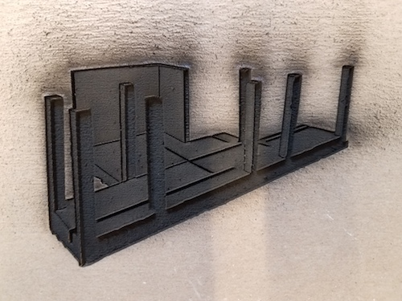
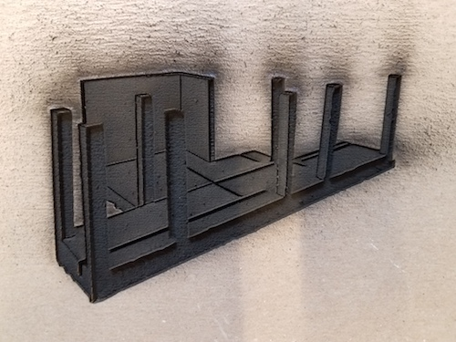

Laser Cutting and the Vinyl Cutter.
Laser cutters
Our 40 Watt Thunder Laser and its operating instructions.
Fablight. (One of many more powerful instuments.) See HTMAA page for more links.
Laser cutting
 
 - What it does.
- Safety - FIRE PREVENTION
- Safety - Chemical Exposure.
- Cutting lines (vector files)
- kerf
- Press-fit constuction.
- Boxes and frames.
- Slicing 3D objects.
- Rastering.
Vinyl Cutter
- What it is.
- What it does.
- Operating instructions.